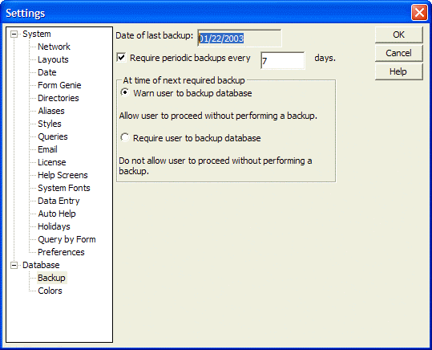

Creating Periodic Backups
You can provide an Alpha Anywhere setting to create weekly database backups. If your database gets very frequent use, you might want to back it up daily.
To create periodic backups:
Select View > Settings > Database > Backup Database.
This panel lets you automatically prompt the user to back up a database. You can set backup rules that require the user to create a backup after a specified interval between backups.

Alpha Anywhere also lets you create "snapshots" of your database, so that you can go back to a particular backup of your database. For example, the backup you made on June 25th, 1999 at 4.35 PM.
Require periodic backups every X days
Every X days, Alpha Anywhere will prompt the user to backup the database. Deselect this check box if you do not want to automatically backup the database.
At Time of Next Required Backup
Warn user to backup database will give the user the option to not backup the database.
Require user to backup database will not let the user proceed until they have backed up the database.